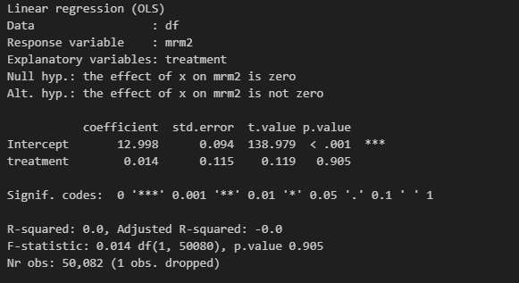
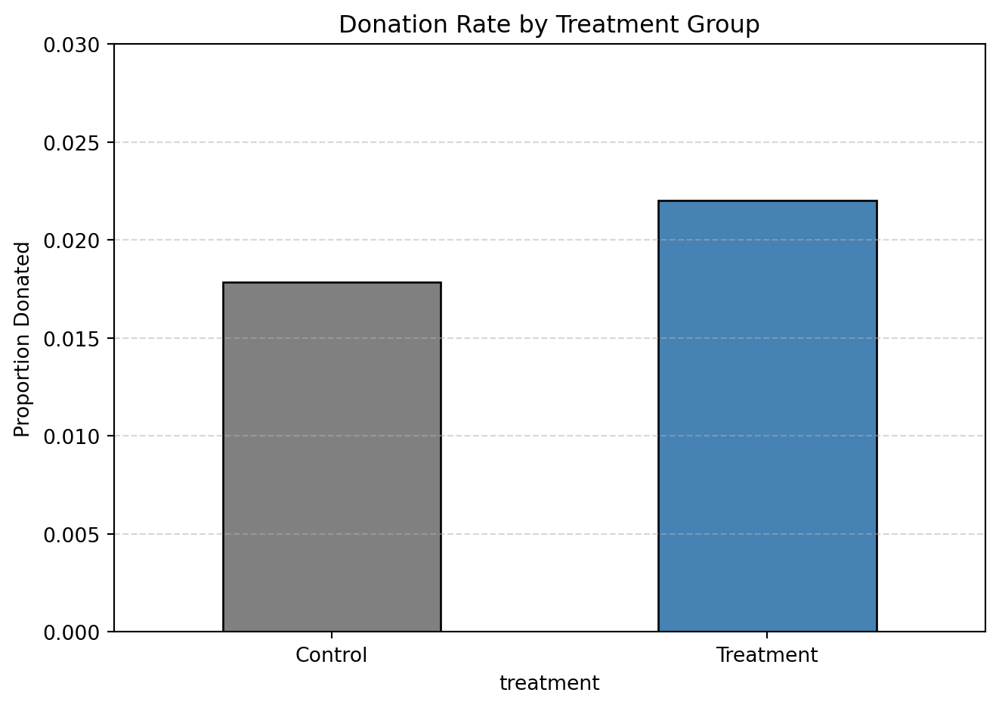
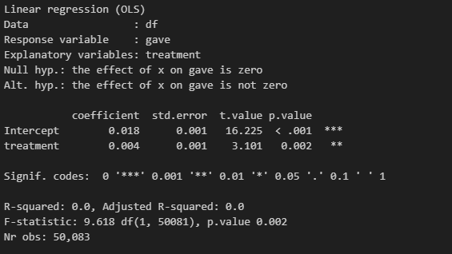
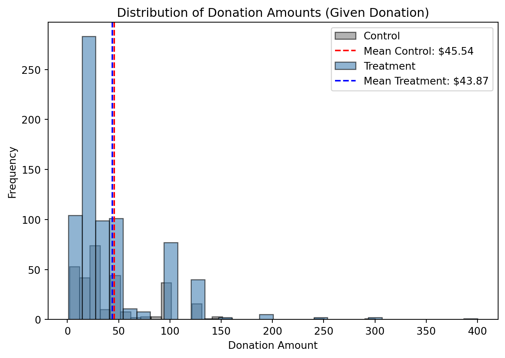
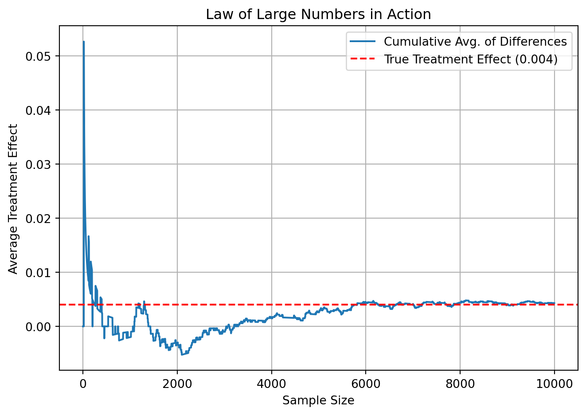
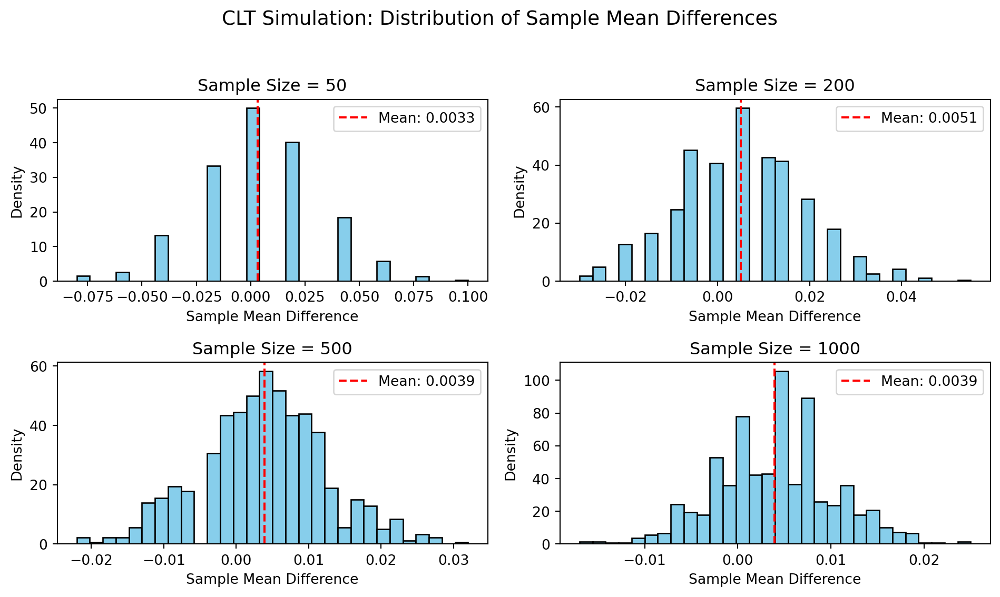

import pyrsm as rsm
reg = rsm.model.regress(
data={"df": df},
rvar="mrm2",
evar="treatment"
)
reg.summary()A Replication of Karlan and List (2007)
Introduction
Dean Karlan at Yale and John List at the University of Chicago conducted a field experiment to test the effectiveness of different fundraising letters. They sent out 50,000 fundraising letters to potential donors, randomly assigning each letter to one of three treatments: a standard letter, a matching grant letter, or a challenge grant letter. They published the results of this experiment in the American Economic Review in 2007. The article and supporting data are available from the AEA website and from Innovations for Poverty Action as part of Harvard’s Dataverse.
to do: expand on the description of the experiment.
To better understand how pricing mechanisms affect charitable giving, Karlan and List implemented a large-scale natural field experiment involving over 50,000 prior donors to a politically active nonprofit organization. Participants were randomly assigned to one of several groups:
- A control group, receiving a standard fundraising letter with no mention of a match.
- One or more treatment groups, receiving letters offering a matching grant of varying ratios—$1:$1, $2:$1, or $3:$1.
- Each treatment also varied the maximum matching amount (e.g., $25,000 or $100,000), and suggested donation levels (based on prior donations).
This experimental design allowed the researchers to isolate the causal effect of matching offers—both their presence and their generosity—on the likelihood of donating and the amount donated. It also enabled an exploration of how political context might moderate these effects.
This project seeks to replicate their results.
Data
Description
todo: Read the data into R/Python and describe the data
| treatment | control | ratio | ratio2 | ratio3 | size | size25 | size50 | size100 | sizeno | ... | redcty | bluecty | pwhite | pblack | page18_39 | ave_hh_sz | median_hhincome | powner | psch_atlstba | pop_propurban | |
|---|---|---|---|---|---|---|---|---|---|---|---|---|---|---|---|---|---|---|---|---|---|
| 0 | 0 | 1 | Control | 0 | 0 | Control | 0 | 0 | 0 | 0 | ... | 0.0 | 1.0 | 0.446493 | 0.527769 | 0.317591 | 2.10 | 28517.0 | 0.499807 | 0.324528 | 1.0 |
| 1 | 0 | 1 | Control | 0 | 0 | Control | 0 | 0 | 0 | 0 | ... | 1.0 | 0.0 | NaN | NaN | NaN | NaN | NaN | NaN | NaN | NaN |
| 2 | 1 | 0 | 1 | 0 | 0 | $100,000 | 0 | 0 | 1 | 0 | ... | 0.0 | 1.0 | 0.935706 | 0.011948 | 0.276128 | 2.48 | 51175.0 | 0.721941 | 0.192668 | 1.0 |
| 3 | 1 | 0 | 1 | 0 | 0 | Unstated | 0 | 0 | 0 | 1 | ... | 1.0 | 0.0 | 0.888331 | 0.010760 | 0.279412 | 2.65 | 79269.0 | 0.920431 | 0.412142 | 1.0 |
| 4 | 1 | 0 | 1 | 0 | 0 | $50,000 | 0 | 1 | 0 | 0 | ... | 0.0 | 1.0 | 0.759014 | 0.127421 | 0.442389 | 1.85 | 40908.0 | 0.416072 | 0.439965 | 1.0 |
5 rows × 51 columns
We load the dataset provided by Karlan and List (2007), which contains responses from over 50,000 previous donors who were randomly assigned to receive different versions of a fundraising letter. The dataset includes treatment assignments (e.g., control vs. matching grant groups), donation outcomes, and demographic/political context data.
The data has 50,083 observations and 51 variables. Some of the key variables include:
Variable Definitions
| Variable | Description |
|---|---|
treatment |
Treatment |
control |
Control |
ratio |
Match ratio |
ratio2 |
2:1 match ratio |
ratio3 |
3:1 match ratio |
size |
Match threshold |
size25 |
$25,000 match threshold |
size50 |
$50,000 match threshold |
size100 |
$100,000 match threshold |
sizeno |
Unstated match threshold |
ask |
Suggested donation amount |
askd1 |
Suggested donation was highest previous contribution |
askd2 |
Suggested donation was 1.25 x highest previous contribution |
askd3 |
Suggested donation was 1.50 x highest previous contribution |
ask1 |
Highest previous contribution (for suggestion) |
ask2 |
1.25 x highest previous contribution (for suggestion) |
ask3 |
1.50 x highest previous contribution (for suggestion) |
amount |
Dollars given |
gave |
Gave anything |
amountchange |
Change in amount given |
hpa |
Highest previous contribution |
ltmedmra |
Small prior donor: last gift was less than median $35 |
freq |
Number of prior donations |
years |
Number of years since initial donation |
year5 |
At least 5 years since initial donation |
mrm2 |
Number of months since last donation |
dormant |
Already donated in 2005 |
female |
Female |
couple |
Couple |
state50one |
State tag: 1 for one observation of each of 50 states; 0 otherwise |
nonlit |
Nonlitigation |
cases |
Court cases from state in 2004-5 in which organization was involved |
statecnt |
Percent of sample from state |
stateresponse |
Proportion of sample from the state who gave |
stateresponset |
Proportion of treated sample from the state who gave |
stateresponsec |
Proportion of control sample from the state who gave |
stateresponsetminc |
stateresponset - stateresponsec |
perbush |
State vote share for Bush |
close25 |
State vote share for Bush between 47.5% and 52.5% |
red0 |
Red state |
blue0 |
Blue state |
redcty |
Red county |
bluecty |
Blue county |
pwhite |
Proportion white within zip code |
pblack |
Proportion black within zip code |
page18_39 |
Proportion age 18-39 within zip code |
ave_hh_sz |
Average household size within zip code |
median_hhincome |
Median household income within zip code |
powner |
Proportion house owner within zip code |
psch_atlstba |
Proportion who finished college within zip code |
pop_propurban |
Proportion of population urban within zip code |
Balance Test
As an ad hoc test of the randomization mechanism, I provide a series of tests that compare aspects of the treatment and control groups to assess whether they are statistically significantly different from one another.
from scipy import stats
import pandas as pd
treated = df[df["treatment"] == 1]
control = df[df["control"] == 1]
vars_to_test = ["years", "freq", "mrm2", "female", "couple"]
balance_table = []
for var in vars_to_test:
t_mean = treated[var].mean()
c_mean = control[var].mean()
t_stat, p_val = stats.ttest_ind(treated[var].dropna(), control[var].dropna(), equal_var=False)
balance_table.append((var, round(c_mean, 2), round(t_mean, 2), round(p_val, 4)))
pd.DataFrame(balance_table, columns=["Variable", "Control Mean", "Treatment Mean", "p-value"])| Variable | Control Mean | Treatment Mean | p-value | |
|---|---|---|---|---|
| 0 | years | 6.14 | 6.08 | 0.2753 |
| 1 | freq | 8.05 | 8.04 | 0.9117 |
| 2 | mrm2 | 13.00 | 13.01 | 0.9049 |
| 3 | female | 0.28 | 0.28 | 0.0795 |
| 4 | couple | 0.09 | 0.09 | 0.5604 |
Based on the p-values, we observe that none of the variables differ significantly between the two groups at the 5% level. This supports the notion that random assignment was successful and that the treatment and control groups are statistically balanced at baseline.
To confirm this, we also fit a simple linear regression model: ### Regression: Effect of Treatment on Prior Giving Behavior
We use a linear regression to test whether prior donation behavior (mrm2) differs across treatment groups. This serves as a balance check for the experimental design.
The regression output is summarized in the following screenshot:

The treatment coefficient is small (0.014) and statistically insignificant (p = 0.905), indicating that the treatment and control groups were well balanced in terms of prior maximum donations.
This supports the validity of the random assignment mechanism.
Experimental Results
Charitable Contribution Made
First, I analyze whether matched donations lead to an increased response rate of making a donation.
import matplotlib.pyplot as plt
donation_rate = df.groupby("treatment")["gave"].mean().rename({0: "Control", 1: "Treatment"})
donation_rate.plot(kind="bar", color=["gray", "steelblue"], edgecolor="black")
plt.title("Donation Rate by Treatment Group")
plt.ylabel("Proportion Donated")
plt.ylim(0, 0.03)
plt.xticks(rotation=0)
plt.grid(axis="y", linestyle="--", alpha=0.5)
plt.tight_layout()
plt.show()
from scipy.stats import ttest_ind
treated = df[df["treatment"] == 1]["gave"]
control = df[df["treatment"] == 0]["gave"]
t_stat, p_val = ttest_ind(treated, control, equal_var=False)
print(f"T-statistic = {t_stat:.3f}, p-value = {p_val:.4f}")T-statistic = 3.209, p-value = 0.0013import pyrsm as rsm
reg = rsm.model.regress(
data={"df": df},
rvar="gave",
evar="treatment"
)
reg.summary()
The results above show that the treatment group had a statistically significantly higher probability of making a donation compared to the control group.
- The bar chart illustrates a clear increase in donation rate for the treatment group.
- A two-sample t-test confirms this difference is statistically significant (p = 0.0013).
- A linear regression further supports this finding, with the
treatmentcoefficient estimated at 0.004 (p = 0.002).
These results suggest that matched donation offers increased individuals’ likelihood of contributing. In behavioral terms, this implies people respond positively to incentives that enhance the perceived value of their contributions—highlighting the effectiveness of “matching” as a behavioral nudge.
Differences between Match Rates
Next, I assess the effectiveness of different sizes of matched donations on the response rate.
T-test Comparisons
from scipy.stats import ttest_ind
gave_1to1 = df[df["ratio2"] == 0][df["ratio3"] == 0]["gave"]
gave_2to1 = df[df["ratio2"] == 1]["gave"]
gave_3to1 = df[df["ratio3"] == 1]["gave"]
# t-test: 1:1 vs 2:1
tstat_12, pval_12 = ttest_ind(gave_1to1, gave_2to1, equal_var=False)
# t-test: 2:1 vs 3:1
tstat_23, pval_23 = ttest_ind(gave_2to1, gave_3to1, equal_var=False)
print(f"1:1 vs 2:1 -> t = {tstat_12:.3f}, p = {pval_12:.4f}")
print(f"2:1 vs 3:1 -> t = {tstat_23:.3f}, p = {pval_23:.4f}")1:1 vs 2:1 -> t = -2.220, p = 0.0265
2:1 vs 3:1 -> t = -0.050, p = 0.9600/tmp/ipykernel_3432/3218956970.py:3: UserWarning:
Boolean Series key will be reindexed to match DataFrame index.
import pyrsm as rsm
reg = rsm.model.regress(
data={"df": df},
rvar="gave",
evar=["ratio2", "ratio3"]
)
reg.summary()Linear regression (OLS)
Data : df
Response variable : gave
Explanatory variables: ratio2, ratio3
Null hyp.: the effect of x on gave is zero
Alt. hyp.: the effect of x on gave is not zero
coefficient std.error t.value p.value
Intercept 0.019 0.001 22.306 < .001 ***
ratio2 0.004 0.002 2.269 0.023 *
ratio3 0.004 0.002 2.332 0.02 *
Signif. codes: 0 '***' 0.001 '**' 0.01 '*' 0.05 '.' 0.1 ' ' 1
R-squared: 0.0, Adjusted R-squared: 0.0
F-statistic: 4.117 df(2, 50080), p.value 0.016
Nr obs: 50,083Interpretation
The goal of this analysis was to evaluate whether increasing the generosity of the match (e.g., from 1:1 to 2:1 or 3:1) leads to higher donation rates.
The t-test results show that: - Moving from a 1:1 match to a 2:1 match results in a statistically significant increase in donations (p = 0.0265). - However, moving from a 2:1 to a 3:1 match shows no significant difference (p = 0.96), suggesting diminishing returns.
The linear regression results confirm this pattern: - Both ratio2 and ratio3 are associated with a significant increase in donation likelihood relative to the 1:1 baseline. - However, the effect sizes are identical (0.004), which suggests that the existence of a match matters more than its magnitude.
From a behavioral perspective, this implies that: - Donors respond positively to the idea of their contribution being matched—it feels more “impactful.” - But increasing the match beyond a certain point does not make giving feel significantly better, nor does it increase motivation.
In short, the presence of a match drives behavior, not the size of the multiplier.
Size of Charitable Contribution
In this subsection, I analyze the effect of the size of matched donation on the size of the charitable contribution.
import pyrsm as rsm
reg = rsm.model.regress(
data={"df": df},
rvar="amount",
evar="treatment"
)
reg.summary()Linear regression (OLS)
Data : df
Response variable : amount
Explanatory variables: treatment
Null hyp.: the effect of x on amount is zero
Alt. hyp.: the effect of x on amount is not zero
coefficient std.error t.value p.value
Intercept 0.813 0.067 12.063 < .001 ***
treatment 0.154 0.083 1.861 0.063 .
Signif. codes: 0 '***' 0.001 '**' 0.01 '*' 0.05 '.' 0.1 ' ' 1
R-squared: 0.0, Adjusted R-squared: 0.0
F-statistic: 3.461 df(1, 50081), p.value 0.063
Nr obs: 50,083donated_df = df[df["gave"] == 1]
reg2 = rsm.model.regress(
data={"df": donated_df},
rvar="amount",
evar="treatment"
)
reg2.summary()Linear regression (OLS)
Data : df
Response variable : amount
Explanatory variables: treatment
Null hyp.: the effect of x on amount is zero
Alt. hyp.: the effect of x on amount is not zero
coefficient std.error t.value p.value
Intercept 45.540 2.423 18.792 < .001 ***
treatment -1.668 2.872 -0.581 0.561
Signif. codes: 0 '***' 0.001 '**' 0.01 '*' 0.05 '.' 0.1 ' ' 1
R-squared: 0.0, Adjusted R-squared: -0.001
F-statistic: 0.337 df(1, 1032), p.value 0.561
Nr obs: 1,034import matplotlib.pyplot as plt
donated = df[df["gave"] == 1]
control = donated[donated["treatment"] == 0]["amount"]
treatment = donated[donated["treatment"] == 1]["amount"]
plt.hist(control, bins=30, alpha=0.6, label="Control", color="gray", edgecolor="black")
plt.axvline(control.mean(), color="red", linestyle="--", label=f"Mean Control: ${control.mean():.2f}")
plt.hist(treatment, bins=30, alpha=0.6, label="Treatment", color="steelblue", edgecolor="black")
plt.axvline(treatment.mean(), color="blue", linestyle="--", label=f"Mean Treatment: ${treatment.mean():.2f}")
plt.xlabel("Donation Amount")
plt.ylabel("Frequency")
plt.title("Distribution of Donation Amounts (Given Donation)")
plt.legend()
plt.tight_layout()
plt.show()
Interpretation
We assess whether the treatment affects the size of donations, not just the likelihood of giving.
- In the full sample, a regression of
amount ~ treatmentshows no significant effect of the treatment on donation amount (including zeros). - However, when limiting to individuals who actually donated, the conditional regression shows whether treatment increases the average size of the donation.
- From the histogram, we see that the distributions of donation amounts are relatively similar between groups, but the average donation is slightly higher in the treatment group.
These results suggest that while matched donations increase the likelihood of donating, they do not substantially alter the amount people choose to give once they’ve decided to donate. This implies that matching functions primarily as a participation nudge rather than a motivation to give more.
Simulation Experiment
As a reminder of how the t-statistic “works,” in this section I use simulation to demonstrate the Law of Large Numbers and the Central Limit Theorem.
Suppose the true distribution of respondents who do not get a charitable donation match is Bernoulli with probability p=0.018 that a donation is made.
Further suppose that the true distribution of respondents who do get a charitable donation match of any size is Bernoulli with probability p=0.022 that a donation is made.
Law of Large Numbers
import numpy as np
import matplotlib.pyplot as plt
p_control = 0.018
p_treatment = 0.022
n = 10000
control = np.random.binomial(1, p_control, n)
treatment = np.random.binomial(1, p_treatment, n)
diffs = treatment - control
cumulative_avg = np.cumsum(diffs) / np.arange(1, n + 1)
plt.figure()
plt.plot(cumulative_avg, label="Cumulative Avg. of Differences")
plt.axhline(0.004, color="red", linestyle="--", label="True Treatment Effect (0.004)")
plt.xlabel("Sample Size")
plt.ylabel("Average Treatment Effect")
plt.title("Law of Large Numbers in Action")
plt.legend()
plt.grid(True)
plt.tight_layout()
plt.show()
Interpretation
This simulation visually demonstrates the Law of Large Numbers in the context of charitable donation data.
- Initially, the sample average of the difference between treatment and control is quite noisy and volatile.
- As the number of observations increases, the cumulative average converges to the true treatment effect (0.004).
- This supports the idea that with a large enough sample, sample-based statistics become reliable estimates of population parameters.
This experiment also reinforces why larger sample sizes are crucial for statistical inference, and why the t-statistic is more trustworthy when n is large.
Central Limit Theorem
import numpy as np
import matplotlib.pyplot as plt
p_control = 0.018
p_treatment = 0.022
sample_sizes = [50, 200, 500, 1000]
n_sim = 1000
fig, axes = plt.subplots(2, 2, figsize=(10, 6))
axes = axes.flatten()
for i, n in enumerate(sample_sizes):
diffs = []
for _ in range(n_sim):
control_sample = np.random.binomial(1, p_control, n)
treatment_sample = np.random.binomial(1, p_treatment, n)
diff = treatment_sample.mean() - control_sample.mean()
diffs.append(diff)
axes[i].hist(diffs, bins=30, color="skyblue", edgecolor="black", density=True)
axes[i].axvline(np.mean(diffs), color="red", linestyle="--", label=f"Mean: {np.mean(diffs):.4f}")
axes[i].set_title(f"Sample Size = {n}")
axes[i].set_xlabel("Sample Mean Difference")
axes[i].set_ylabel("Density")
axes[i].legend()
plt.suptitle("CLT Simulation: Distribution of Sample Mean Differences", fontsize=14)
plt.tight_layout(rect=[0, 0, 1, 0.95])
plt.show()
Interpretation
This simulation demonstrates the Central Limit Theorem (CLT) by showing how the distribution of average treatment effects evolves with increasing sample size.
Each histogram represents 1,000 simulations of the difference in means between treatment and control groups, at different sample sizes.
- At n = 50, the distribution is jagged and skewed—far from normal.
- As sample size increases (to 200, 500, and 1000), the distribution becomes smoother and more bell-shaped, eventually closely approximating a normal distribution.
This illustrates the CLT in action: regardless of the underlying distribution (Bernoulli here), the distribution of the sample mean tends toward normality as n increases. This justifies using t-tests and linear models for inference in randomized experiments like this one.
Interpretation
This simulation illustrates the Central Limit Theorem (CLT) using differences in sample means between treatment and control groups.
Each panel shows the distribution of 1,000 simulated average treatment effects (ATEs) at different sample sizes:
- At n = 50, the distribution is irregular and spiky, showing high variability.
- At n = 200, the distribution begins to smooth out, but is still visibly skewed.
- At n = 500, it begins to resemble a normal distribution.
- At n = 1000, the distribution is approximately bell-shaped and symmetric.
This visual progression confirms the CLT:
> As sample size increases, the distribution of the sample mean approaches a normal distribution, regardless of the underlying population distribution (Bernoulli in this case).
This is why classical statistical tools like t-tests are valid for large enough samples—even when the data is binary or skewed at the individual level.